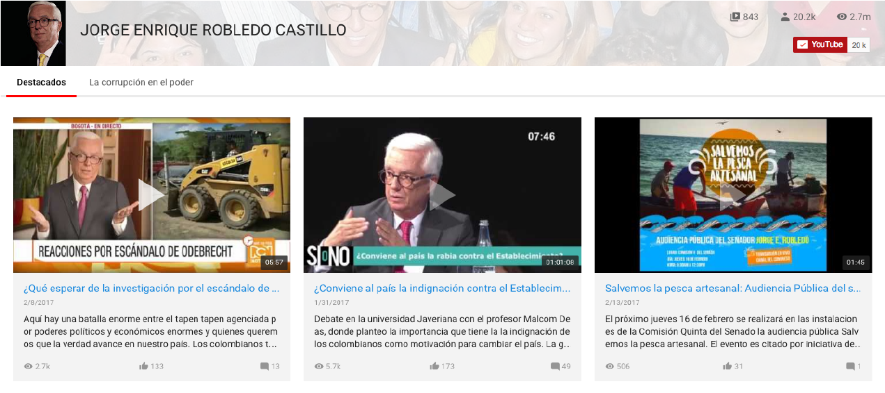

conózcalo
biblioteca
(current)
prensa
agenda
voluntarios
videoteca

Boletines
Consecuencias de la corrupción de Odebrecht no las deben pagar los trabajadores: Robledo
Hace 2 días
Cientos de trabajadores y proveedores de la Ruta del Sol-Odebrecht han protestado por incumplimientos en los pagos
Ni canoa, ni atarraya
Hace 2 días
Tenemos ríos, tenemos mares, tenemos pescadores, pero muere la pesca artesanal.
“El Fiscal Martínez Neira no nos va a engañar”: Robledo
Hace 2 días
Martínez Neira está impedido para ser Fiscal en Odebrecht
Audios
Debates
Colombia necesita educación universal, de alta calidad, gratuita y pública: Robledo
Hace 2 días
Educación universal, de alta calidad, gratuita, pública y pagada por el Estado, una de las consignas más democráticas en la historia de la humanidad.
Santos debe poner los recursos que sean necesarios para el mejor Metro para Bogotá
Hace 2 días
Peñalosa tomó la peor decisión técnica en la historia de Bogotá al hacer Transmilenio y no Metro por la Avenida Caracas.
[Transcripción] El verdadero Ministerio de Salud son las EPS
Hace 2 días
Tan son un fracaso las medidas sobre Saludcoop y Cafesalud, que podrían arrastrar al colapso todo el sistema de salud.
Articulos quincenales
¡¿Y es que no saben quiénes somos?!
Hace 2 días
El 21 de diciembre pasado, la trasnacional Odebrecht le confesó a la Justicia de Estados Unidos el pago de sobornos por 778 millones de dólares en doce países
Responsabilidades legales y políticas en la corrupción de Odebrecht
Hace 2 días
Ante la justicia norteamericana, los directivos de la trasnacional Odebrecht reconocieron el pago de 788 millones de dólares de sobornos
De hecha la ley, hecha la trampa, a introducir la trampa en la ley
Hace 2 días
Colombia es uno de los países más corruptos del mundo.